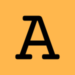

Home Page
CV, bio, lists of talks, papers, venues, contact details
SLEBoK
a new multi-track initiative for which I am the Editor-in-Chief (2017–…)
OOPSLE
a workshop about open and original problems in SLE (2013–…)
BibSLEIGH
extensive interactive bibliography of papers at S(L)E venues (2014–…)
DYOL
a software language design with intent toolkit made from 24 compiler-related books (2017–…)
Grammar Zoo
collection of extracted grammars in a broad sense (2009–…)
GraSs
an active project to define, specify, detect and remove smells in grammars (2017–…)
bidirectional megamodel of parsing and unparsing in a broad sense
an industrial PhD project with UCL and VUB (2020–2023)
a mixed academic-industrial research project among RCL, UCL and VUB (2018–2020)
RCL CoCoDo
a full day compiler experience event bridging academic ‹Programming› and industrial Raincode Labs (2017)
GTTSE
a summer school on grammar tackling trends
(2005–…)
SATToSE
SoTeSoLa
a regular event for collaborating on software evolution
(2008–…)
GrammarLab
a grammar manipulation library for Rascal
(2013–…)
Software Language Processing Suite
my main repo in 2008–2012
Wikipedia
occasionally contributing to the sum of all knowledge
Twitter
mostly for keeping in touch with the research community (2007–…)
UvA MSc SE
a one-year university graduate programme in Amsterdam
MMMDE
a workshop about mathematical methods in MDE (2015)
info about international conferences in Russian (2012–2013)
Software Language Engineering Glossary
in [conceptual] development, superseded by SLEBoK terms
Rascal
a language for metaprogramming I contributed to (2010–2013)
Open Notebook
nobody else is crazy enough to do open notebook computer science
PEM
a colloquium I used to organise (2012–2013)

SE Alphabet
software language engineering from A to Z; useless fun (2015)
The page is maintained by
Dr. Vadim Zaytsev
a.k.a. @
grammarware
. Dim tiles refer to past projects. See
copyright disclaimer
. Last updated: February 2020.